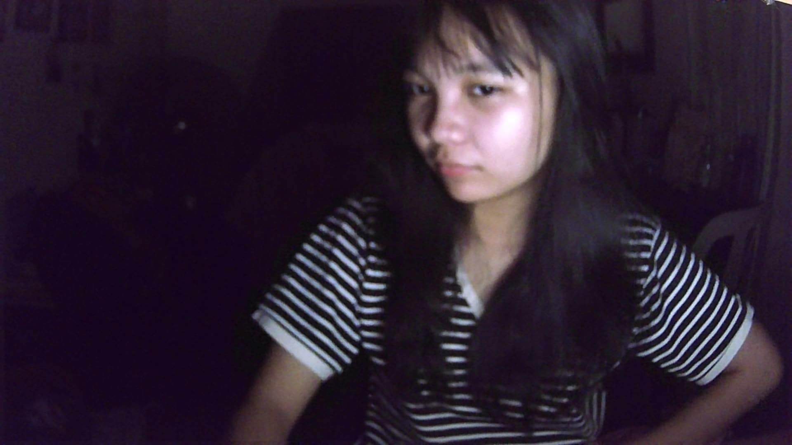
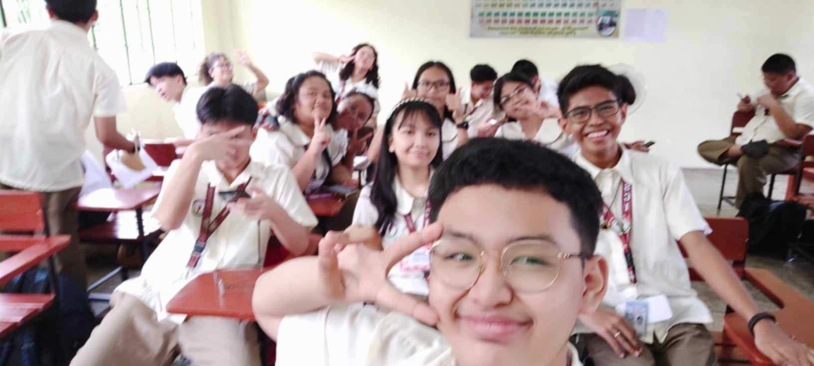
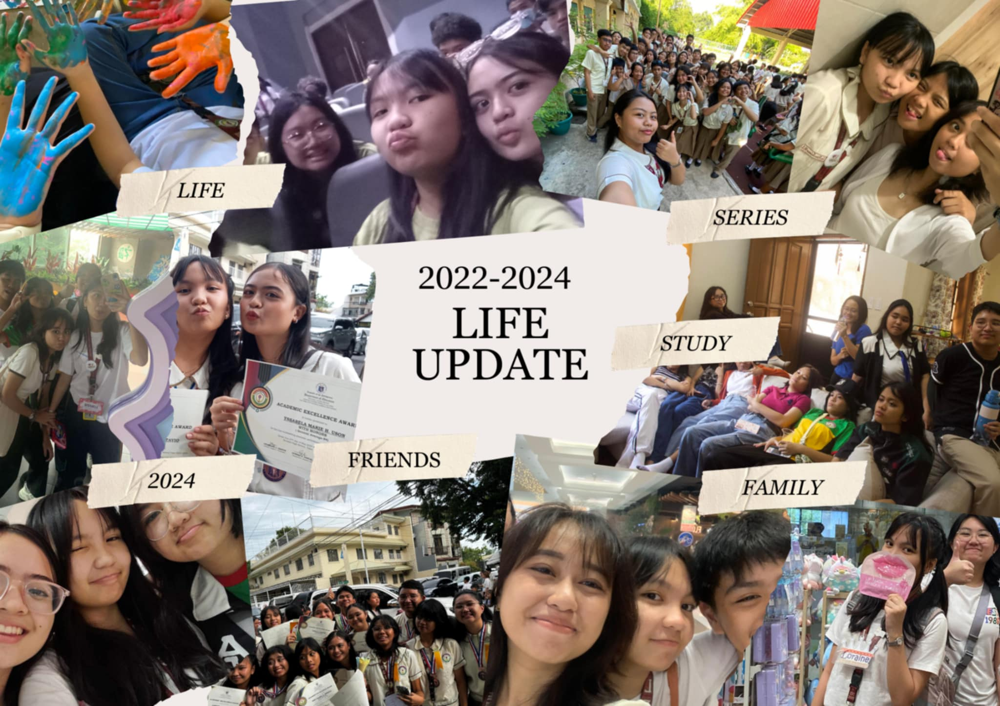

Hello there! I'm Loraine Ann Parcon Octavio , studying at Las Pinas City National Sience High School . Today,
I'm here to talk about my experience as an Lpsci student/Lapiscian. My daily experience, friends I made, challenges I faced,
and my solution/s.
Here's a quick and easy survey for you to answer!
|
|
|
I've been studying in Las Pinas City National Science High School for lmost 3 years now. And I madde a LOT of friends, facedd man challenges
and its normal not just for student but also for many people. I want to share with you my ups and down as a lpsci student/lapiscian. But for now,
let me focus on my first quarter being a grade 9 student.
I can say that Grade 8 is the BEST school year . I made a LOT of memories and of course made friends aswell. So when the grade 9 arrived
I don't know what to do anymore. Because my friends is in another section/s. Thankfully there's someone I know that I can be friend with. Hopefully, that's enough.
When the first day came. I observe that some of my classmates already know me. Most of them are my friends (not really close friends), some of them is my classmate/s rom last year. And
the rest I don't know wo are they!!.
First week past and I already know 3/4 of them. I'm not really that sociable thats why I'm having a hard time to make friends. As time went by, I get used to them. We laugh, work,
spendd time together. Anddd thats it. The 1at quarter is ddone. I enjoyed it A LOT . Hopefully, my classmate and I can keep this bond until the end of school year.

Smart, Pretty, Helpful, Leadership, words that my family use about me when they are talking to others. I don't agree with them, maybe just 50%. Because now that I'm in highschool, and
my schedule is over the moon. I don't see them often. Sunday is the only day my family and I get to spend time together. But for me, that's not enough time for them to know me. Maybe they 100% know
my mini me. But not my teenage self. My favorite time of the year is when it comes to holiddday. That's the only time I'm sure that my family and I can bonddd together. Wondder who really knows me? My friends.
Funny, Pretty, Leadership, words that my friends describe me. And I 75% agree with them. They are the people who I see everyday, bond everyday, fight everyday, etc. They know me and I know them.
Every ups andd down I encounter. My friends will always be one call away.
Don't get me wrong I love my family and friends equally. Wonder why I don't 100% agree with my friends? The truth is, I am the only one who really knows me. I'm that type of person who really
can't express my thought and feelings. I find it really weird when I open up about my feelng that's why I keep it to myself. And I don't regret doing it.
Fun Facts:
|
|

Sadly, this is the only picture I got when doing some activities in I.C.T:(. But, we've done a lot of activities in I.C.T. And my favorite part is when we go to I.C.T. Beside for aircon, I also like
the activities we do there. Like coding. For me, that's the only way tudent can really use the lesson they learn. By the way, that picture is the 1stweek of class. Mrs. Uminga gave us a task to make a website the contains
our expectaton/s and we're suppoed to insert a picture. So, I suggested that we take a picture (they are my new friends in our classroom, happy to have them).
Most of the activities we did in I.C.T is more on coding, which is in the I.C.T room and we re not allowed to use our phone. I'm actually okay with that. Because mot of the student used ther phone for some notes
or some other stuff that are not related in the subject.
I'm pretty sure im not the only one who LOVES free time. As a student who have 12 subjects I really do need a rest. Everytime I go home, my time for myself don't exist anymore. Because of the groupings and pile of work
One of the major problem student faced is the practicing for the preentation of the groupings. Everytime we have a groupings and the time for preparation is short. We tried to barrow some time from the other teachers.
Mrs. Uminga is one of the teacher/s who I can say a good and understanding teacher. She understand the pile of work we have and the problem we faced. In that picture, we ask her if she can gave us her time to practice for our
science presentation. This is not the first time Mrs. Uminga gave her time for other subject. If ever she is absent sometimes instead of giving us a work/activity, she always tell us to finish our tsk to ther subject. And we are thankful to have her
not just her but also the other teachers who undertand us.

I want to share some of my friends I made all throughout my 3 years in Las Pinas City National Science High School. To be honest, they are the reason why i'm still here in this scchool. Reason why I wake andd go to school. People that keeping me together.
Maybe this is really the highschool life evveryone is talking about when I was a kid. Another fun fact about me is I don't like being alone. That's why when I gratuatedd elementary I realized that all of my friends won't be near me anymore. And no one knows how thankful I am
that I met this kind of people. Even though I don't express my feelings that much I love them so much. They saw my happy, sad, depressed era, etc. And they did not leave me. If I were to describe them It would be a free psychiatrist. Because they me the words I need to hear that my love
ones an't even provide.
Just like last school year. I.C.T focused on the aspects of creating a website. This quarter has been both challenging and rewarding, providing me a new knowledge that I can use when I grow up. This quarter developed my technical skills even more. Ican use this to help others who are haing a hard time using technology Its actually un o creaate your own website. Collaboration is also one the major skills I.C.T help me to develop. Colaborrating with my classmates allowed me to gain different perspecives and sharing knowledge. One of the challenges i Faced not just in this quarter but also from last year aswell, is wwhen it comes to memorizing some attributes term/s. I just can't memorize them all at once. Another one is when we are in the I.C.T room, when our teacher gave us the time to make a website for only 45 minutes. Since I'm having a hadd time to memorize the attributes I can't finish the task on time, that also affects my grade whicch is bad:(. Last thing is hen you do the website andd one wrong code can really affect your website and it lead to frustrations. The journey for the 1st quarter is not that gooddd. But at least now I know what to improve. I look forward to bilding on this founddation, embracing my fuure projects with enthusiasm.